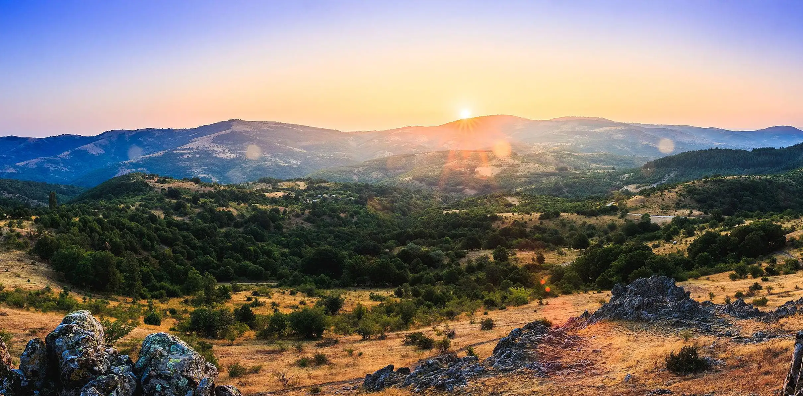

Верување
Обреди, богови и луѓето што доаѓале
Култ на плодноста упатен кон Големата Богинка Мајка, сонце што го давало правото да се владее и воинствените народи што подоцна ја држеле оваа земја.
Кокино има двојна улога. Додека еден дел од маркерите всечени во карпата се користеле од практични причини, како начин за следење на времето и сезоните, другиот дел, заедно со камените престоли и самата карпа, имал ритуално значење. Како светилиште, се смета дека Кокино било регионален религиозен центар — луѓето патувале и до два дена пешки за да ги извршат своите ритуали.
Големата Богинка Мајка
За народите кои живееле во околината на Кокино во бронзената доба, слично како и за други народи од периодот, елементите биле живи, имале свои карактери и расположенија. Археолозите претпоставуваат дека две главни форми на религиозни ритуали се изведувале на локалитетот, како дел од обожувањето на две божества обожувани во многу култури пред и за време на бронзената доба — Големата Богинка Мајка и Сонцето.
Големата Богинка Мајка била персонификација на растот, на плодната земја која ги раѓала посевите, ги хранела домашните животни и самите луѓе кои живееле од неа. Карпите на Кокино имаат вулканско потекло, поради што постојат бројни хоризонтални и вертикални пукнатини. Луѓето кои живееле во близина ги доживувале пукнатините како отвори во утробата на Големата Богинка Мајка.
Во нив носеле дарови од своите куќи: садови полни со овошје и зеленчук, течни жртви, фигурини, мелници за жито, пирамидални тегови и калапи за лиење бронзени предмети. Откако ќе ги положеле, ги затрупувале со земја и камен. Овие дарови требало да ја одоброволат божицата за таа да им даде плодна сезона.
Малите вотивни керамички фигурини — со претстави на делови од човечко тело и домашни животни — имале намена да им обезбедат добро здравје на луѓето и на стоката.
Сонцето и троновите
Другиот обред е поврзан со божеството на Сонцето. Сонцето, кое било сметано за син на Големата Богинка Мајка, означувало светлина, сила, моќ и топлина. Археолозите сметаат дека токму за да се пренесе симболичната моќ на сонцето и правото да се владее со племето се исклесани и троновите на Кокино. Луѓето кои седат на нив се свртени со своите лица на исток.
Сонцето тогаш излегува на источниот хоризонт, при што прво го осветлува тој што седи на едниот престол, а потоа и сите други, и на тој начин му дава легитимитет и сила на старешината или свештеникот да владее со својот народ. Моќта на сонцето се пренесува на лицето на кое паѓа светлината.
Обредниот маркер К
Најмаркантниот астрономски маркер, „обредниот маркер“ К, бил набљудуван од набљудувач кој седел на еден од троновите. Маркерот се наоѓа веднаш под највисокиот дел на локалитетот и на него се појавува сонцето во некои денови од годината. При тоа, сончевите зраци поминуваат покрај десниот раб на вештачки исечената траншеа во карпите кои ја обрабуваат, од запад, платформата Б, потоа минуваат низ уште еден вештачки обработен маркер и осветлуваат само едно камено седиште на платформата А.
Маркерот К е воедно и втор маркер за рамнодениците — уште еден доказ дека градителите на мегалитската опсерваторија го познавале концептот. Набљудуван од платформата Г, тој истовремено е и маркер за ѕвездата Алдебаран, бидејќи во 21 в. пр. н. е. (околу 2083 г.) таа се наоѓала во точката на рамноденицата.
Во почетокот на вториот милениум пр. н. е., хелијакалното појавување на Алдебаран во средината на месец мај — низ маркерот за рамнодениците, гледан од платформата Г — и изгрејсонцето низ „обредниот маркер“ К, гледано од платформата со троновите, се случувало во истото утро. Бидејќи маркерот за рамнодениците и обредниот маркер се изработени во истиот каменен блок, тој е заеднички, односно „двоен“ маркер за платформите А и Г.
Осветлувањето на еден од троновите, како и појавувањето на Алдебаран и сонцето на двојниот маркер, биле набљудувани веројатно во рамките на обредни прослави со кои се одбележувале почетоци на нови сезони, обнова на природата и нови циклуси на земјоделски и сточарски активности од кои зависел опстанокот на праисториската заедница.
Народите што дошле подоцна
Кокино и неговата околина биле постојано населени уште од почетокот на бронзената доба. За некои од тие народи, како градителите на опсерваторијата и светилиштето, можеме само да претпоставуваме како живееле, поради недостаток на пишан јазик и ограничениот број артефакти. За други, пак, историјата зачувала текстови, записи и преданија.
Познато е дека на територијата на денешна Македонија, во железната доба и во антиката, биле населени Пајонците, народ опеан и во Хомеровата Илијада. Познати по своите јавачки способности, Пајонците се бореле на страната на Тројанците во Тројанската војна. Поради своите вештини како коњаници, тие биле регрутирани и во грчките, а во подоцнежни времиња и во римските војски како дел од тешката коњица.
На малку од луѓето кои го посетуваат Кокино им е познато дека на територијата која ја надгледува опсерваторијата, во времето на Александар Македонски, живеел еден од најборбените народи во регионот — Агријаните. Агријаните биле дел од пајонските племиња, познати по својата вештина во фрлањето копја, како и по својата дисциплина како воена единица. За да ја задржат брзината, со себе носеле сноп џилити, без оклопи и шлемови, па можеби дури и без штитови. Биле вешти во справувањето со тешки терени каде не било практично да се користи фалангата или каде мобилноста била повредна.
Ако го посетите Кокино на некој од овие денови, во зенитот на моќта на елементите, можеби и Вие, барем на еден момент, ќе бидете пренесени во легендарното минато на локалитетот, кога живите богови сè уште шетале по нашата земја.